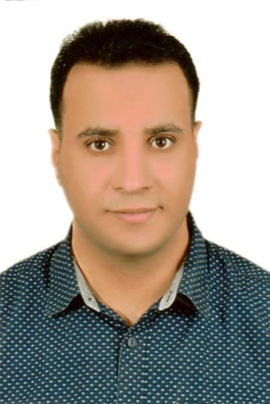

Anas M. Ali

Research Assistant, Prince Sultan University
Master's in Electronics and Communications Engineering, Minufiya University
Email: aaboessa@psu.edu.sa
LinkedIn: https://www.linkedin.com/in/anas-m-ali-388164268/
Google Scholar: https://scholar.google.com/citations?user=eBVRL_gAAAAJ&hl=en
ResearchGate: https://www.researchgate.net/profile/Anas-M-Ali
Scopus: https://www.scopus.com/authid/detail.uri?authorId=57198724497
My h-index: 9
Summary
Energetic research specialist with expertise in computer vision, deep learning, and image processing. Experienced in image restoration, remote sensing, and integrating robotics with computer vision.
Teaching Experience
Overview
I have substantial experience in training and teaching, particularly in AI and computer programming. I previously conducted a course on Generative AI, covering foundational concepts, cutting-edge advancements, and practical applications of generative models such as GANs and diffusion models. This experience honed my ability to communicate complex ideas effectively, making me adept at both academic instruction and industry training.
At the AIET Institute in Alexandria, Egypt, I delivered multiple courses on AI and computer programming to students with varying levels of expertise. My role involved creating structured lesson plans, simplifying advanced topics, and ensuring students gained practical, hands-on experience with AI tools and programming. Additionally, at the Air Defense College in Egypt, I conducted courses in computer programming and computer vision, focusing on equipping students with the technical skills necessary to implement AI-based solutions, including image processing and analysis techniques.
My diverse teaching background has given me the ability to adapt my teaching style to different audiences, ensuring effective knowledge transfer and engagement across academic and professional settings.
Detailed Teaching Experience
- 2018-2022 Teaching Assistant – CE112 – Fundamentals of Logic Design – Department of Computer Engineering, AIET
- 2018-2022 Teaching Assistant – CE212 – Digital Logic Design – Department of Computer Engineering, AIET
- 2018-2022 Teaching Assistant – CE001 – Electromagnetic Waves I – Second Year, Air Defense College in Egypt
- 2018-2022 Teaching Assistant – CE001 – Electromagnetic Waves II – Second Year, Air Defense College in Egypt
- 2018-2022 Teaching Assistant – ECE355 – Digital Signal Processing – Department of Computer Engineering, AIET
- 2018-2022 Teaching Assistant – CE001 – Introduction to Computer Systems – Preparatory Year, AIET
- 2018-2022 Teaching Assistant – CE002 – Computer Programming – Preparatory Year, AIET
- 2018-2022 Teaching Assistant – ECE131 – Electric Circuits I – Department of Electronics and Communications Engineering, AIET
- 2018-2022 Teacher – ECE442 – Very Large Scale Integration Lab – Department of Electronics and Communications Engineering, AIET
- 2018-2021 Teacher – PHY001 – Physics Lab – Preparatory Year, AIET
- 2018-2021 Teacher – FBGA Lab – Department of Electronics and Communications Engineering, AIET
- 2018-2021 Teaching Assistant – ECE442 – VLSI Fabrication and Design – Department of Electronics and Communications Engineering, AIET
- 2018-2021 Teaching Assistant – CE403 – Computer System Software – Department of Computer Engineering, AIET
- 2018-2021 Teaching Assistant – ECE454 – Image Processing – Department of Electronics and Communications Engineering
- 2020-2023 Teaching Assistant – 66860 – VLSI Lab – Department of Electronics and Communications Engineering, AIET
Publications
Published
- "Vision Transformers in Image Restoration: A Survey", Sensors (MPDI), Q2, Impact Factor: 3.85
- "TESR: Two-Stage Approach for Enhancement and Super-Resolution of Remote Sensing Images", Remote Sensing (MPDI), Q1, Impact Factor: 5.35
- "Streamlined Global and Local Features Combinator (SGLC) for High Resolution Image Dehazing", CVPR 2023
- "NTIRE 2023 HR Nonhomogeneous Dehazing Challenge Report", CVPR 2023
- "Brain Tumor Classification Using Hybrid Single Image Super-Resolution Technique", IEEE Access, Q2, Impact Factor: 3.9
- "Automatic Modulation Recognition Using CNN Deep Learning Models", Multimedia Tools and Applications, Springer, Q2, Impact Factor: 3.6
- "Deep-Learning-Based Super-Resolution and Classification Framework for Skin Disease Detection Applications", Optical And Quantum Electronics, Springer, Q2, Impact Factor: 2.79
- "Deep CNN Model for Multimodal Medical Image Denoising", Computers, Materials & Continua, TechScience, Q2, Impact Factor: 3.0
- "Efficient Classification of Different Medical Image Multimodalities Based on Simple CNN Architecture", Journal of Optics, Springer, Q2, Impact Factor: 1.8
- "Automated COVID-19 Detection Based on Single-Image Super-Resolution and CNN Models", Computers, Materials & Continua, TechScience, Q2, Impact Factor: 3.0
Under Review
- "Guided Frequency Loss for Image Restoration", Computational Visual Media, Springer, Q1, Impact Factor: 6.9
- "License Plate Super-Resolution Using Diffusion Models", Computers and Electrical Engineering, Elsevier, Q1, Impact Factor: 4.325
- "Prompting Robotic Modalities (PRM): A Novel Robotic Design Pattern", Expert Systems with Applications, IEEE, Q1, Impact Factor: 12.6
- "DM-AHR Paper on Skin Hair Removal Using Self-Supervised Diffusion Models", IEEE Transactions on Consumer Electronics, Q1, Impact Factor: 4.3
Collaboration Publications
- "Deep CNN Model for Multimodal Medical Image Denoising", Computers, Materials & Continua, TechScience, Q2, Impact Factor: 3.0
- "Traditional and Deep-Learning-Based Denoising Methods for Medical Images", Multimedia Tools and Applications, Springer, Q2, Impact Factor: 3.6
- "Efficient Deep-Learning-Based Autoencoder Denoising Approach for Medical Image Diagnosis", Computers, Materials & Continua, TechScience, Q2, Impact Factor: 3.0
Experience
- Research Assistant, Prince Sultan University (2022 - Present)
- Lecturer and Research Assistant, Alexandria Higher Institute of Engineering & Technology (2018 - 2022)
- Assistant Lecturer, Egyptian Air Defense Academy (2019 - 2021)
Education
- MS in Electronics and Communications Engineering, Minufiya University (2019 - 2021)
- B.S in Electronics and Communications Engineering, Alexandria Higher Institute of Engineering & Technology (2011 - 2016)